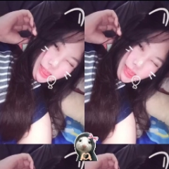

Selamanya Milikmu

Malam ini begitu tenang, Sasa. Hanya ada suara jarum jam dinding yang terus melangkah dan hembusan napasmu yang teratur di sampingku. Aku menatap wajahmu yang terlelap damai di bawah pendar temaram lampu tidur. Sudah entah keberapa ribu kali aku memandangi wajah ini sejak kita bersama, namun rasanya debar di dadaku masih selalu sama seperti saat pertama kali mata kita saling bertatap. Kadang, di tengah sunyinya malam seperti ini, saat dunia sedang beristirahat, aku tersadar betapa beruntungnya seorang Keonho memilikimu. Kamu tahu? Kehadiranmu dalam hidupku adalah sebuah keajaiban yang tidak pernah berani kuminta secara terang-terangan, namun Tuhan berikan dengan begitu murah hati.
Banyak orang bilang cinta itu adalah tentang kembang api yang meledak di angkasa, tentang euforia sesaat dan kejutan-kejutan besar yang menggebu. Tapi bersamamu, aku belajar bahwa cinta sejati jauh lebih sederhana, namun jauh lebih dalam. Cinta adalah kehangatan yang menetap dan konsisten. Cinta adalah aroma parfummu yang perlahan menjadi aroma favoritku, secangkir teh yang kita nikmati berdua sambil membicarakan hal-hal remeh di Minggu pagi, senyum tulusmu saat menyambutku pulang kala bahuku terasa berat oleh riuhnya dunia, dan erat genggaman tanganmu saat kita hanya duduk terdiam di ruang tengah.
Kamu, Sasa, adalah rumah tempat semua penatku luruh tanpa sisa. Sebelum kamu hadir, aku tak pernah benar-benar mengerti arti kata 'pulang' yang sesungguhnya. Dulu, pulang bagiku hanyalah tentang kembali ke sebuah bangunan fisik untuk merebahkan badan. Namun sejak kita mengikat janji suci di hadapan Tuhan, 'pulang' bukan lagi tentang tempat, melainkan tentang kembali ke pelukanmu. Ke tempat di mana aku bisa menjadi diriku sendiri yang paling rapuh, tanpa takut dihakimi.
Aku ingat masa-masa di mana semuanya terasa begitu berat untuk kita lewati. Ada kalanya aku meragukan langkahku sendiri, ada kalanya dunia terasa terlalu bising dan menuntut. Tapi kamu selalu teguh berdiri di sana, istriku. Dengan matamu yang meneduhkan dan suaramu yang menenangkan badai di kepalaku, kamu selalu berhasil menarikku kembali dari jurang keputusasaan. Kamu tidak pernah menuntutku untuk menjadi manusia yang sempurna; kamu menerimaku utuh, lengkap dengan segala retak, ego, dan kurangku. Dan hebatnya kamu, cintamu justru menyatukan kembali kepingan-kepingan yang berserakan itu, membuatku tanpa sadar selalu ingin menjadi versi terbaik dari diriku, hanya untukmu. Kelembutan hatimu bukanlah sebuah kelemahan, Sa. Bagi Keonho, kelembutanmu adalah kekuatan terbesar yang menopang hidupku.
Sasa, istriku yang paling cantik... Aku tahu, aku mungkin bukan laki-laki puitis yang selalu pandai merangkai kata manis secara lisan setiap harinya. Kadang aku kaku, kadang aku terlalu sibuk dengan urusanku, dan untuk semua waktu di mana aku kurang memanjakanmu atau membuatmu merasa kesepian, aku sungguh meminta maaf. Tapi lewat tulisan ini, aku ingin kamu meresapi satu hal: tidak ada satu detik pun dalam hariku yang berlalu tanpa namamu terlintas di benakku. Tawamu adalah melodi favorit yang selalu ingin kudengar, dan kebahagiaanmu adalah tujuan utama dari setiap keringat yang kuteteskan sekarang. Saat kamu sedih, seluruh duniaku ikut mendung. Dan saat kamu tersenyum, rasanya matahari bersinar hanya untuk menghangatkan kita berdua.
Perjalanan kita tentu tidak berhenti di sini. Masih banyak lembaran kosong dalam buku kehidupan kita yang menunggu untuk diisi dengan tinta yang sama. Aku membayangkan masa depan di mana rumah kita akan selalu dipenuhi oleh kehangatan, langkah-langkah kecil yang mungkin kelak akan meramaikan sudut-sudut ruangan, dan petualangan-petualangan baru yang akan kita taklukkan bersama. Apa pun yang menanti kita di depan sana, entah itu jalan mulus yang bertabur bunga atau jalan terjal yang penuh kerikil tajam, selama tanganmu berada dalam genggamanku, aku tidak akan pernah gentar. Keonho-mu ini akan selalu berdiri di garis paling depan, menjadi perisai dan sandaran kokoh untukmu bersandar.
Kita sudah melewati berbagai musim bersama. Musim kemarau yang menguji kesabaran dan ego kita, hingga musim hujan yang mengajarkan kita untuk saling menghangatkan di bawah satu payung yang sama. Dan sungguh, aku tidak sabar untuk melewati puluhan, bahkan ratusan pergantian musim lagi hanya bersamamu. Aku ingin menua bersamamu, Sa. Aku ingin menjadi saksi saat garis-garis halus mulai muncul di sudut matamu ketika kamu tertawa, dan aku ingin tangan kita yang mulai keriput nanti tetap saling menggenggam erat di beranda rumah, sambil kita menceritakan kembali kisah cinta masa muda kita ini.
Tidurlah yang nyenyak, separuh jiwaku. Besok pagi saat kamu membuka mata, aku akan ada di sana, di sampingmu, siap menyambut harimu dengan cinta yang jauh lebih besar dari hari ini. Terima kasih karena sudah memilihku di antara jutaan manusia di bumi, Sasa. Terima kasih karena sudah bersedia memanggilku suamimu. Aku mencintaimu. Hari ini, esok, dan di setiap sisa tarikan napas yang Tuhan izinkan untukku.